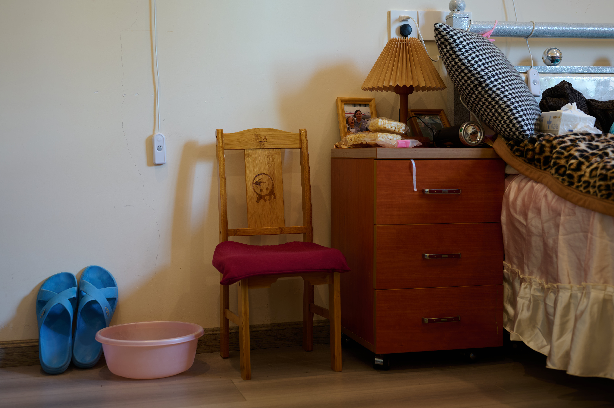
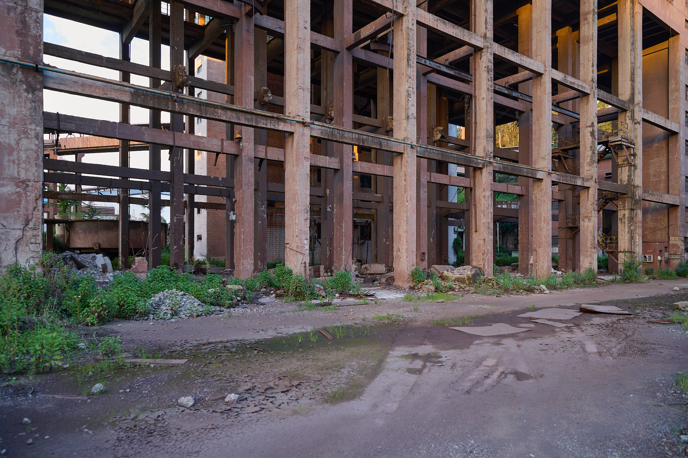
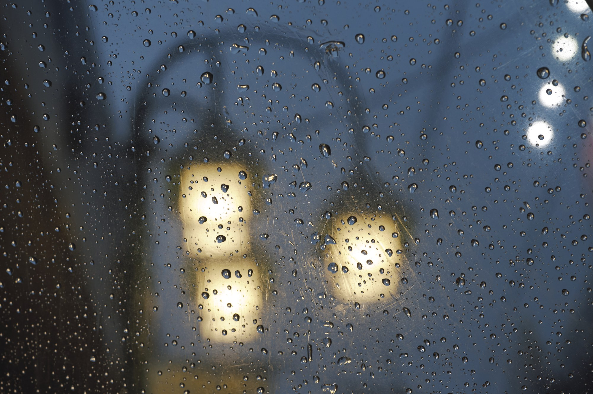
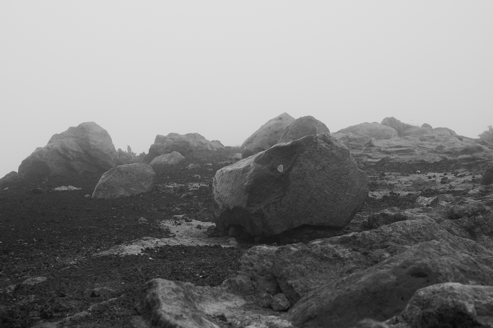
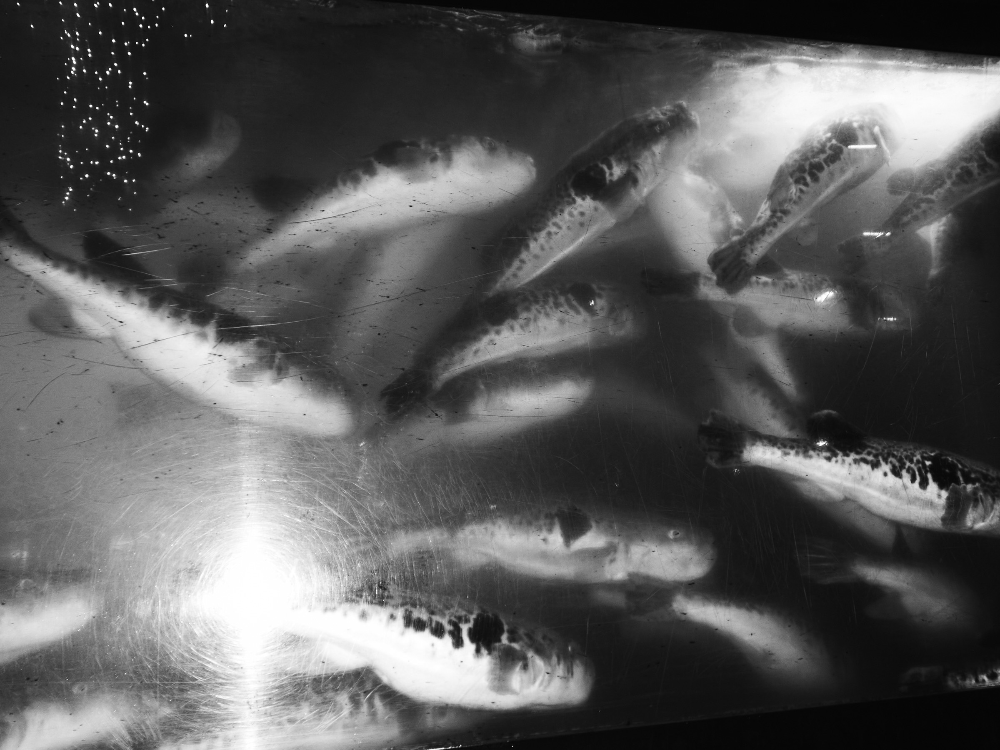

不在のあいだに
雨
見えないものの重さ
梦游症


傅 文謙 Fu Wenqian
中国・雲南省生まれ
2023雲南芸術学院
ビジュアルコミュニケーションデザイン専攻 卒業（学士）
2026東京綜合写真専門学校 在学中


不在のあいだに
雨
見えないものの重さ
梦游症中国・雲南省生まれ
2023雲南芸術学院
ビジュアルコミュニケーションデザイン専攻 卒業（学士）
2026東京綜合写真専門学校 在学中
夏休みに中国へ帰り、生まれ育った昆鋼を訪れた。幼い頃、工場の建物はいつも身近にあり、日々の暮らしの背景として当たり前のように存在していた。その風景がいつか失われるとは思わず、一つひとつの姿を覚えておこうとしたこともなかった。
再び訪れた昆鋼で目にしたのは、役割を終え、廃墟となった工場だった。建物の骨組みや窓の形には見覚えがあったが、壁は崩れ、地面には草木が広がり、記憶の中の風景とはすぐに重ならなかった。それは、以前の場所が古くなった姿というよりも、私の知らない時間を過ごしてきた、別の場所のように感じられた。
故郷を離れていたあいだ、私の生活が別の土地で続いていたように、昆鋼にも私のいない時間が流れていた。自分が成長し、離れた場所で日々を過ごしているあいだにも、建物は古くなり、役割を失い、少しずつ姿を変えていた。記憶の中で止まっていた風景は、現実の場所では一度も止まることなく変化を続けていた。
見覚えのある壁や建物の輪郭を見つけると、かつての風景が一瞬だけ近づいてくる。しかし、その隣にある崩れた部分や草に覆われた地面を見ると、もう同じ時間には戻れないことを感じる。懐かしさと戸惑いが同時に生まれ、自分の記憶と目の前の現実とのあいだにある距離が、はっきりと現れてくる。
そこへ戻ることは、懐かしい故郷との再会であると同時に、すでに知らない場所となった故郷に初めて出会うことでもあった。変わったのは建物だけではない。かつてこの場所と同じ時間を生きていた私も、すでにあの頃の自分ではなくなっていた。
私が不在だった時間を埋めることはできない。故郷は私の記憶の中にとどまることなく、私の知らないところで変化を続けていく。それでも、変わってしまった風景の前に立つことで、離れていた時間と、そこへ戻ってきた現在の自分が、初めて同じ場所に重なった。
霧が山と森を覆うとき、見慣れているはずの風景が、突然知らない場所のように感じられる。近くの岩は濡れた表面だけを残し、木々は重なりながら奥へ消え、遠くの山は、そこにあるのかさえ確かめられなくなる。
その中に立っていると、深い静けさを感じると同時に、わずかな不安が生まれる。霧はゆっくりと動き、一度隠したものを少しだけ見せ、また白い空気の中へ連れ去っていく。見えたと思った瞬間には、すでに風景は別の姿へ変わっている。
すべてを見たいと思うほど、見えない部分が大きくなっていく。しかし、何も見えないわけではない。岩の湿った手触り、木々の黒い重なり、遠くに残る山の気配。はっきりとは見えないものほど、強く意識の中に残っていく。
山も、森も、岩も、私が見失ったあとも、霧の向こうに存在し続けている。その確かさに安心しながら、決してすべてには触れられないことに寂しさを感じる。私は、もっと近づきたい気持ちと、わからないまま見つめていたい気持ちのあいだに立っていた。